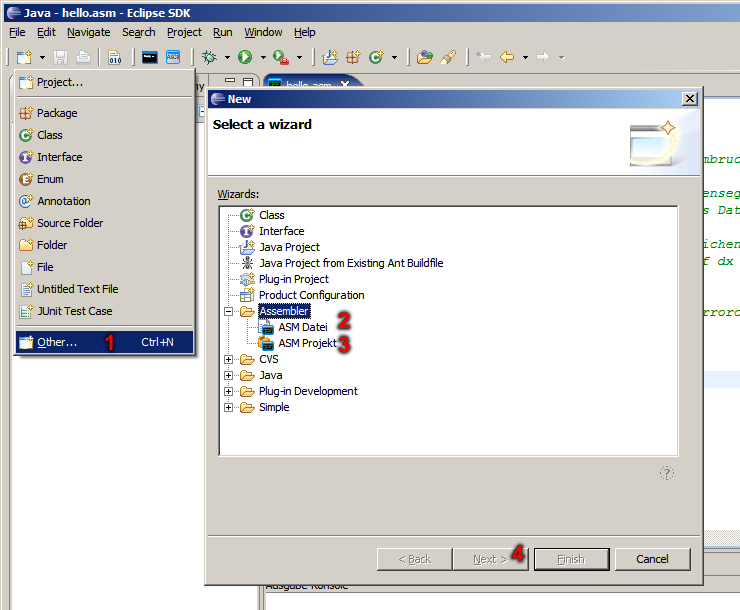
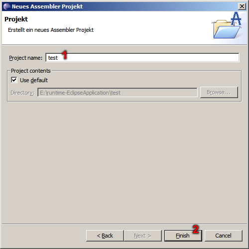

ASM Plug-In - New ASM Project
In this dialog you can choose whether you want to cause an ASM project or an ASM file.

- Choice to the extended new-dialog.
- Making new ASM project.
- Making new ASM file.
- Next to set attributes of selected entry.
In this dialog you can set the name of ASM project.

- Name of the new ASM project.
- Finish and create new ASM project.